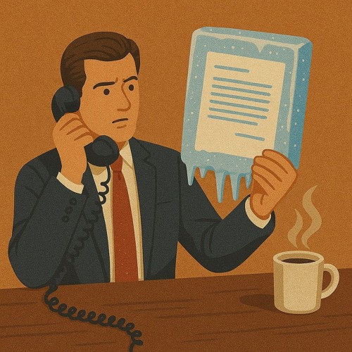
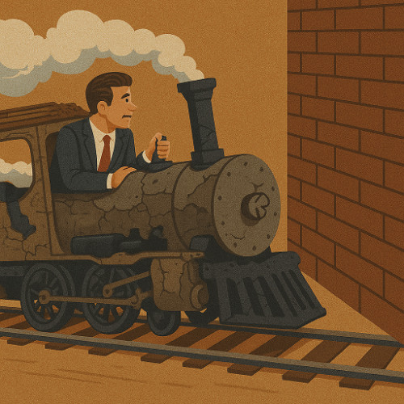
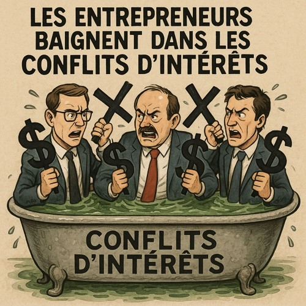

Acheter une entreprise, ne vous focalisez pas sur le prix d'achat !

Acquisitions : ne vous focalisez pas sur le prix d’achat ! Par Jean Christophe Ordonneau
Augmentation des cadres
Comment répondre à un cadre demandant une augmentation ? Par Jean Christophe Ordonneau
Crise de créativité ? Griffonnez !
L'art du griffonnage pour l'innovation par Patrick Chassagne
Faut il ouvrir son capital ?
Faut il partager son capital, Par Patrick Chassagne et Jean Christophe Ordonneau
L'art de la prospection à froid
L'art du cold-calling, par Christelle Nemorin
L'art de négocier
Par Jean Christophe Ordonneau
La créativité selon David Lynch
Selon son livre Catching the Big Fish, par Patrick Chassagne
Le Piège Abscons - théorie de l'engagement
Le Piège Abscons, selon Robert Vincent Joule, par Patrick Chassagne et Jean Christophe Ordonneau
Les Entrepreneurs baignent dans les conflits d'intérêts
Commnent les détecter et les éviter, Par Tristan de Viaris
Naviguer le chaos Entrepreneurial
Naviguer le chaos Entrepreneurial, selon Patrick Chassagne
Prenez un bras droit !
Rajoutez vous un troisième bras, par Patrick Chassagne et Jean Christophe Ordonneau